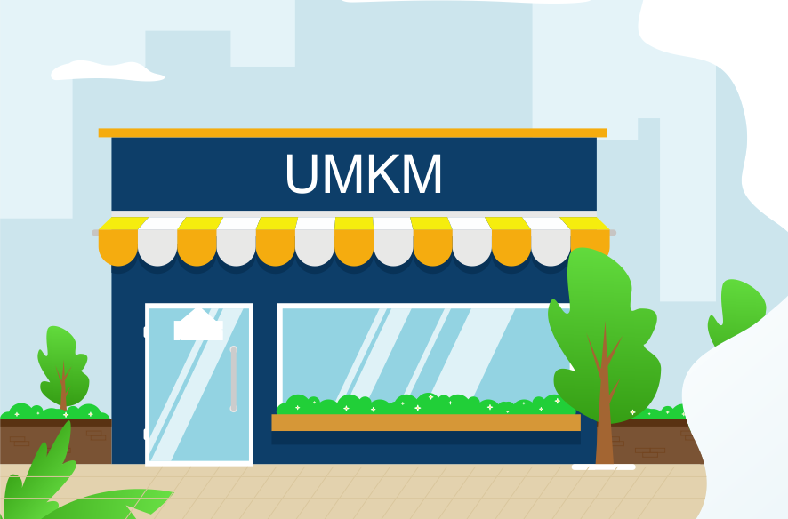

UMKM
(Usaha Mikro Kecil Menengah)
UMKM adalah roda penggerak perekonomian Indonesia. Ketika berbicara tentang bisnis dan ekonomi,
apalagi tentang dunia usaha terkadang kita dihadapkan pada satu istilah yang
sangat berperan terhadap perekonomian yaitu UMKM.
Bahkan dari segi usaha pengelolaan, masih memiliki hubungan erat dengan perekonomian masyarakat di berbagai lapisan.
Tetapi dalam bentuk usaha ekonomi yang non korporasi.
Di Indonesia sendiri bidang usaha semacam ini pada tahun 2016 ke atas justru mengalami peningkatan.
Ini menjadi bukti kalau masyarakat masih berminat untuk menjalankan usaha UMKM dengan baik.
Dalam perspektif usaha seperti yang dijelaskan di atas, maka lumrah jika ada pengamat yang menyamakan antara UMKM dengan UKM.
Padahal jika dianalisis lebih mendetail sejatinya keduanya memiliki perbedaan yang sangat signifikan.
Terutama jika peninjauan diarahkan pada segi lingkup usaha serta hukum yang menjadi regulasi keduanya.
Pengertian UMKM Secara Umum
Pengertian UMKM secara umum adalah singkatan dari Usaha Mikro Kecil dan Menengah. Yang mana ini merupakan satu model baru dalam kegiatan perniagaan atau perdagangan.
Ada juga yang mengartikan bahwa UMKM adalah suatu usaha perniagaan yang pengelolaannya dilakukan oleh individu atau perorangan serta badan usaha dengan lingkup kecil yang lebih dikenal dengan istilah mikro.
Contoh Contoh Usaha UMKM
- Usaha Kuliner
- Usaha Fashion
- Usaha Agribisnis
Kuliner merupakan contoh usaha yang bergerak dalam perniagaan segala macam makanan dan minuman. Ini sebuah usaha yang juga dikategorikan sebagai satu bagian dari jenis usaha UMKM. Karena karakter niaga biasanya masih berupa usaha mikro kecil.
Contoh usaha UMKM yang kedua adalah usaha fashion atau usaha yang bergerak dalam bidang jual beli pakaian.
Tidak dimungkiri bisnis ini juga memiliki progresif yang cukup bagus. Apalagi pakaian menjadi kebutuhan pokok manusia yang juga harus tersedia.
Usaha ini masuk ke dalam jenis UMKM karena sejatinya masih belum banyak orang yang membangun usahanya dengan sistem perniagaan tinggi.
Sekalipun mereka tidak juga membangun bisnisnya dalam bentuk usaha kecil atau mikro. Karena sebagian besar usaha fashion ini biasanya bergerak dalam bentuk usaha menengah.
Contoh usaha yang tergolong ke dalam UMKM yang ketiga adalah usaha agribisnis. Ini merupakan suatu bisnis atau satu usaha yang ada hubungannya dengan penyediaan alat pertanian. Misal usaha menjual pupuk, bibit tanaman, zat pestisida dan yang sejenis.
Biasanya usaha ini terdapat di daerah pedesaan. Mengacu pada modal yang minim dan progres usaha yang tidak menentu tentunya bisnis ini masih layak dijadikan sebagai jenis usaha UMKM.
- Cara Instalasi Windows 10
- Cara Instalasi driver dengan kms
- Doewnload Kms Auto pico terbaru
- Berita Seputar UMKM
- Liputan 6
- Good day